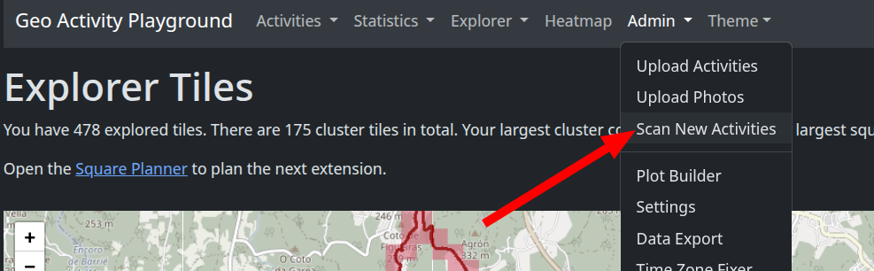
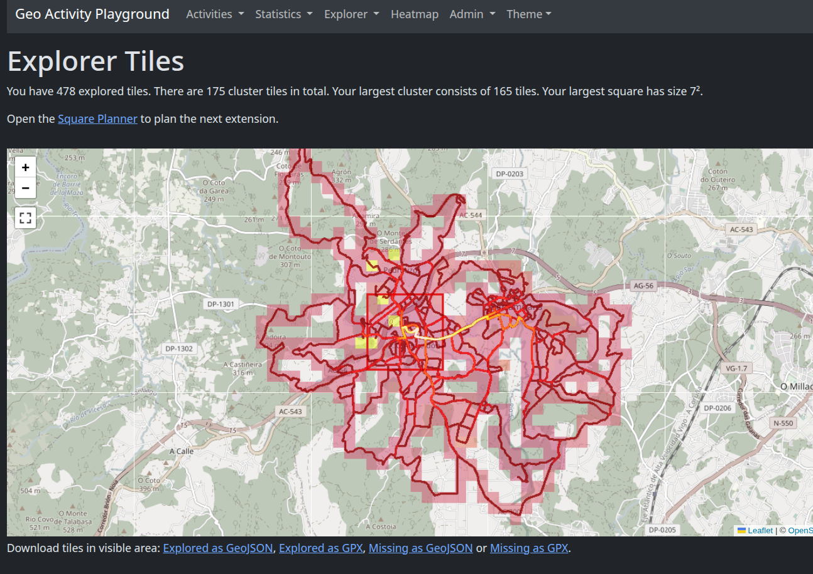
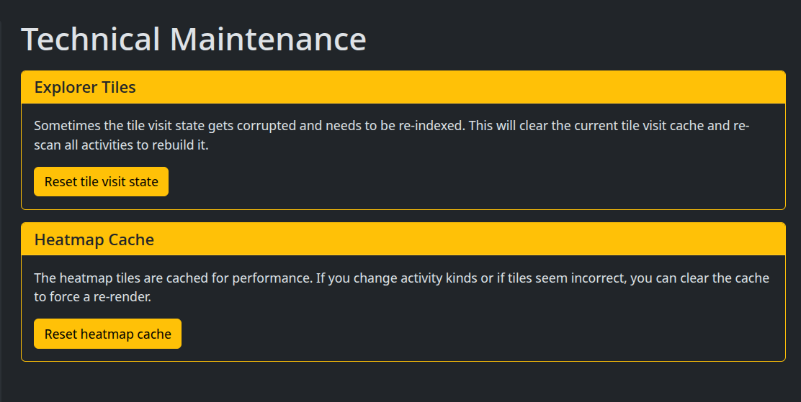

Jugar a descubrir el mundo.
Usaremos OSMTracker para registrar las rutas y despues exportaremos el archivo .gpx y podremos visualizar todas las rutas usando GpsMaster para poder ver todos los sitios por donde hemos ido.

Jugar a descubrir el mundo.
Usaremos OSMTracker para registrar las rutas y despues exportaremos el archivo .gpx y podremos visualizar todas las rutas usando GpsMaster para poder ver todos los sitios por donde hemos ido.
El GpsMaster tiene que ser ejecutado usando java 1.8
Para visualizar las rutas podemos abrir todos los archivos .gpx que tengamos o tambien podemos editar un único archivo e ir incluyendo todos los tracks (las etiquetas <trk>) en un único archivo (aunque puede ser algo lioso)
Para exportar en el OSMTracker es mejor usar la opción de compartir y despues usar el navegador de archivos o el kdeConnect para obtener el archivo .gpx:

Una manera alternativa de este juego es el Tile Hunting, que básicamente es ir descubriendo las distintas cuadriculas del mundo, una aplicación muy buena para esto es Geo Activity Playground, para instalarla lo hacemos con:
pipx install geo-activity-playground
NOTA: Necesitamos al menos python 3.12
Una vez instalada la ejecutamos con:
geo-activity-playground --basedir DIRECTORIO serve
El parámetro --basedir indica donde está almacenada toda la información de la aplicación o donde se almacenará si es la primera vez que la ejecutamos.
Una vez lanzada la aplicación (Despues de que termine de hacer toda la configuración inicial), solo tenemos que añadir dentro de la carpeta Activities nuestros archivos .gpx, y a continuación actualizar la información usando Admin > Scan New Activities
En la sección Explorer podemos ver los tiles descubiertos tanto en Zoom 14 como en Zoom 17, tambien podemos si queremos exportar archivos .gpx con los tiles no descubiertos para usarlos en futuras rutas.
La aplicación tiene algunos fallos a la hora de cargar nuevos archivos .gpx, muchas veces los tiles y el heatmap no se actualizan como deben, para refrescar esta información en la base de datos tenemos que ir a Admin > Settings y despues en el menú lateral vamos a Technical Maintenance, desde aquí podemos recargar tanto los tiles visitados como el heatmap para que se muestren correctamente:
WorldDiscover | Geo-Activity-Playground